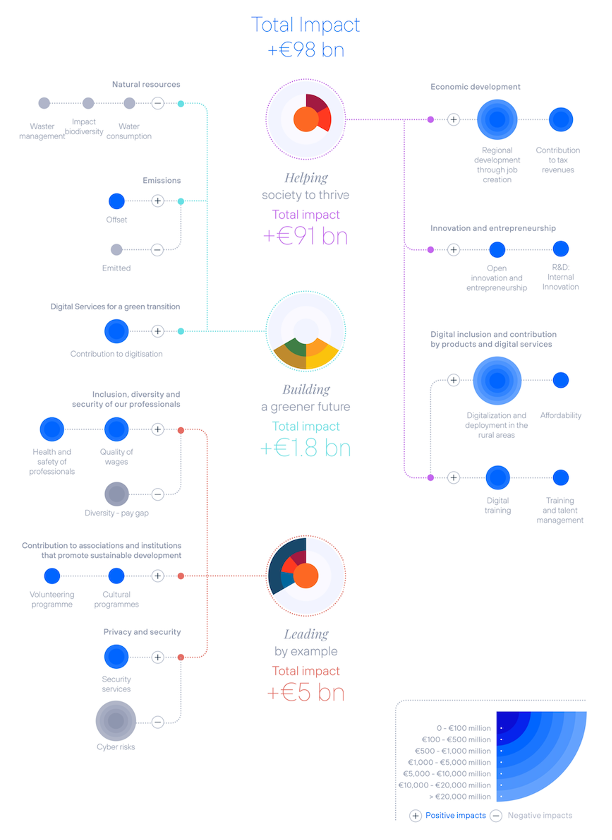
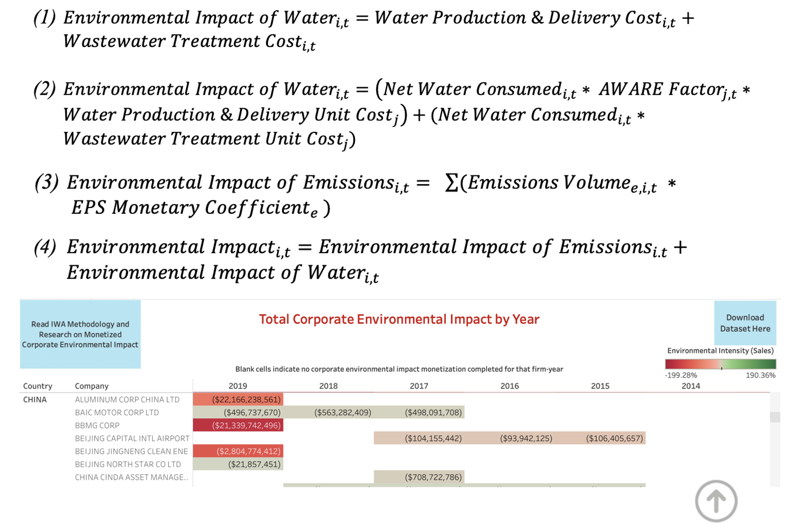
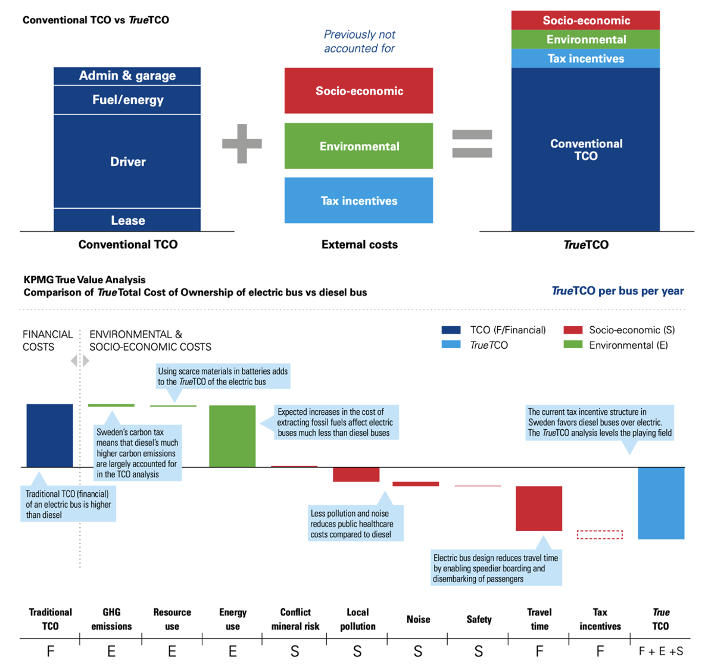
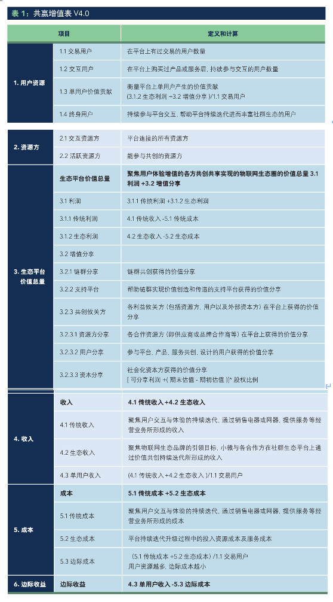

从股东财富最大化到利益相关方影响最大化
最近看完了《大量废弃社会》，越发觉得经典的经济理论及建立在上面的现代企业和市场不靠谱。
企业的核心使命-股东财富最大化（maximize shareholder value）是有问题的，现在的可持续观念只是在原来的使命上多追加了一点ESG（环境、社会、公司治理）要求，治标不治本，特别是当你看到有些公司宣传广告一般的ESG报告的时候，会更加失望。我们需要的是从头定义企业存在的基础，不只是为了短期和长期的经济利益，而是以一种“命运共同体”的理念，以利益相关方影响最大化（maximize stakeholder impact）为核心，重新设计、调整、协调商业与市场模式。中国自古就有共生理念，尽管当前的制度在创立时借鉴了西方经验，但是我相信中国将引领未来的现代化经济模式。
联合国早在2015年就提出了“2030年可持续发展议程”，2016年17项可持续发展目标（SDGs）生效，分别是：无贫穷；零饥饿；良好的健康与福祉；优质教育；性别平等；清洁饮用水和环境卫生；经济适用的清洁能源；体面工作和经济增长；产业、创新和基础设施；减少不平等；可持续城市和社区；负责任的生产和消费；气候行动；水下生命；陆地生命；和平，正义和强大机构；促进目标实现的伙伴关系。
把目标读两遍，委婉的感受是2030年实现目标很有压力，直白的感受是Life sucks。单提一个气候行动里面的解决全球变暖问题，“巴黎协定”里面提出的1.5摄氏度目标（努力把全球平均气温较工业化前水平升高控制在1.5摄氏度之内）已经显得不可能，2摄氏度极有难度。根据Oliver Wyman（2022），G7国家公司的实际排放量沿着的是2.7摄氏度的路径。2022年《联合国气候变化框架公约》第27次缔约方大会（COP27）之前，联合国环境规划署发布的《2022年排放差距报告》指出“国际社会远远没有达到巴黎的目标，尚无可靠路径将升温控制在1.5℃以内。只有紧急进行全系统转型才能避免气候灾难。”作为普通人，我们最直接的感受是今年的夏天一定异常炎热。
可持续发展目标的实现需要企业承担起实质性的环境、社会责任，但是目前围绕股东财富最大化的商业模式是短视的、局限的。《大量废弃社会》中提出了两个非常值得思考的商业特点—“大规模生产”和“分工”。
“大规模生产”VS恰到好处的规模
传统的商业决策标准是：收益（benefit）-成本（cost）>0，这件事就值得做。如果一件事成功了，就可以思考如何复制，扩大规模，扩大收益。这样的模式没有对成本进行进一步的拆解，往往不会考虑为了达成销售/利润目标而产生的负面影响。因为从赚钱角度，只要收入能够覆盖成本，就没问题。苹果公司在生产时，不会假定每一部手机都会售出，未能售出的手机也会被记入成本，尽管消耗了资源，但是并未给消费者或者公司带来实际效益（“卖不出去的0.7部手机”）。在服装行业，为了抵御快消时尚的冲击、压缩成本、预留库存避免缺货，大规模生产导致了大量废弃，约占供给量1/4的服装被废弃销毁，从绝对值来看，日本2017年的废弃量达10亿件（《大量废弃社会》）。中国循环经济协会数据显示，我国每年大约有2600万吨旧衣服被扔进垃圾桶（数据可能来源于《2018-2019年度中国废旧纺织品综合利用发展报告》，没有免费版本未核实）。2600万吨是几年前的数据，以1kg每件衣服换算大概是260亿件，14亿中国人口每人18件，比我每年买的新衣服数量都多。
这种规模生产思维的第二个弊端在于不知道什么时候停止扩张。根据边际效用递减法则，一种商业模式存在一个最有效点（sweet spot），超出“恰到好处”的规模会打破平衡，让商业模式变形。《大量废弃社会》中提到了近江商人的“三方得利”（卖家、买方、社会）观点：“不鼓励一味扩张，而是‘恰到好处’，并将有益的事物与他人分享”。书中提到的示例是惠方卷，一种季节性习俗食品，节分日临近会在便利店出售。本来是能方便消费者，给便利店增收，弘扬习俗的一件事情，但当销售KPI被提上日程的时候，就出现了有些店里日均废弃500根惠方卷的浪费问题，部分店铺甚至为了销售额达标强制店员自购。同样的案例也可以推广到粽子、月饼等。
“分工”与人力资本积累
标准化流程、分工带来效益的最大化，但是目前的会计法则无法衡量人力资本，ESG报告中常见的数据是员工平均培训小时数（主要是职安健、反腐败方面的）、员工满意度（很少披露）、新雇佣职工数量（很少披露）、员工流失率（很少披露）、员工死亡率。这些指标都无法明确指示公司给员工带来的价值，特别是技术水平方面。《大量废弃社会》中有这样一段话：
「但在孟加拉国那样的国家里，制作工序和流程被细分化，即使刚刚进厂的工人也能迅速投入工作。甚至有的人进了工厂，整整一年都在安装服装右侧的按钮。这样的工作无论干上多久，工人的技术水平也不会提升，工资也不会上涨。」（pp. 17）
其实不光是制造业，像金融服务业也有细致的分工，比如专门负责画图、画PPT的工种。解决问题的关键在于我们需要一个怎样的组织机构？员工支持机制？
更进一步，我们如何衡量企业对环境、社会的影响，把这些影响也作为像利润率、投资回报率这样重要的指标？可衡量才可对比，有对比就有选择，有选择就能给企业经济上的动机去实现利益相关方影响最大化。
从财务信息披露角度，目前能想到的两个例子是西班牙电信（Telefónica）的Impact Report和海尔的共赢增值表。
西班牙电信（Telefónica）的Impact Report
西班牙电信的引用很好：
What is not defined cannot be measured.
What is not measured cannot be improved.
What is not improved is always degraded.
— Lord Kelvin
参考哈佛大学的Impact Weighted Account Initiative (IWAI)和KPMG的True Value方法论，西班牙电信会量化公司在ESG方面产生的影响力。但是这些影响力的测算模型还有待完善的地方，准确性和完整性没有财务数据那么严谨。

- 哈佛大学IWAI
样本为Bloomberg ESG Index的成份公司，主要测算环境影响，分为水和排放物，水的金钱化用到了水生产及运输费用、水处理费用，和考虑水资源匮乏程度的AWARE（Availability WAter REmaining）因子。排放物的金钱化主要使用了Environmental Priority Strategies (EPS) 数据库中的系数。利用同一数据库还可以把排放物的影响对应到相应的SDG。
官方网站上有根据注册地来分的各地区公司历年环境影响数据，中国公司不多，有些公司注册地在境外，如开曼，被划到注册地。

- KPMG-True Value
KPMG True Value在传统的财务指标上加入了ESG方面的影响，这些影响依靠数据进行金钱化。比如Volvo案例中，计算电动公交项目的真实拥有成本True Total Cost of Ownership (TrueTCO) 。

其中参考的测算数据主要来自ASEK (Arbetsgruppen för SamhällsEkonomiska Kalkyler, the work group for cost-benefit analysis)，还包括其他学术和政府机构的数据。在搜索True Value服务的时候，发现只在几个国家，比如荷兰、比利时、德国、南非有，可能是这些地区数据比较丰富的缘故。
海尔的共赢增值表
海尔在2021年9月17日发布了《共赢增值表蓝皮书》，从生态角度，把公司对利益相关方的影响纳入“第四张表”— 共赢增值表。在如何定义利益相关方的范围，如何计算生态收入和成本上还没有清晰明确的解释。

- UN SDG: https://sdgs.un.org
- Oliver Wyman MISSING THE MARK 2022 analysis of global CDP temperature ratings: https://www.oliverwyman.com/our-expertise/insights/2022/sep/cdp-temperature-ratings.html
- UNEP《2022年排放差距报告》: https://www.unep.org/zh-hans/resources/2022nianpaifangchajubaogao
- “卖不出去的0.7部手机”: https://www.chinatimes.com/cn/realtimenews/20230306000005-260405?chdtv
- “中国每年2600万吨废旧衣物被扔 再利用率不到1%”: http://env.people.com.cn/n1/2016/0328/c1010-28230355.html#:~:text=中国资源综合利用,进行无害化处理%E3%80%82
- Measuring the social and environmental impact of Telefónica 2022: https://www.telefonica.com/en/wp-content/uploads/sites/5/2022/12/executive-summary-report-impact-measurement.pdf
- IWAI：https://www.hbs.edu/impact-weighted-accounts/Pages/explore-our-data.aspx
- KPMG Netherlands - True Value：https://kpmg.com/nl/en/home/services/esg-and-sustainability-services/true-value.html
- LCIA: the ReCiPe model：https://www.rivm.nl/en/life-cycle-assessment-lca/recipe
- ASEK: https://bransch.trafikverket.se/for-dig-i-branschen/Planera-och-utreda/Planerings--och-analysmetoder/Samhallsekonomisk-analys-och-trafikanalys/asek-analysmetod-och-samhallsekonomiska-kalkylvarden/
- 海尔共赢增值表研究：共赢增值表-物联网时代的财务工具：https://www.docin.com/p-2555069397.html